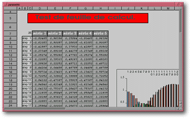

<!-- Documentation XQuad (c)1995-2000 AXENE contact axene@axene.org>
<html>

<head>
<title>Fenêtre de document</title>
</head>

<body BGCOLOR="#FFFFFF" BACKGROUND="Images/back.gif" TEXT="#000000">

<p ALIGN="right"> </p>

<p><br>
<br>
Chaque document ouvert d'XQuad est contenu dans une fenêtre à l'intérieur du plan de
travail . Une fenêtre de document est comparable aux fenêtres des applications sous
Unix, on peut les déplacer, les redimensionner en horizontal et en vertical, les
&quot;icônifier&quot;, les &quot;maximiser&quot; et les fermer. <br>
<br>
</p>

<hr>

<p align="center"><br>
 <br>
<small><i>Photo d'écran&nbsp;: Fenêtre de document </i></small></p>

<p><br>
</p>

<hr>

<p><br>
</p>

<p>Toutes les fenêtres de document dans XQuad sont composées de la façon suivante (de
haut en bas et de gauche à droite)&nbsp;: 

<ol>
  <li><b>L'interface de gestion de la fenêtre</b>. Il s'agit de toute la partie qui entoure
    la fenêtre et qui, servant de décor à la fenêtre, réagit de façon standard comme
    dans tous les systèmes de multi-fenêtres. Un document est actif si son contour est
    mauve, sinon il est gris. Toutes les opérations accessibles par les menus et les icônes
    agissent sur le document actif. Un click sur la fenêtre d'un document non actif le rend
    actif. La barre horizontale supérieure se compose de&nbsp;: <br>
    &nbsp; <ul>
      <li> le bouton icône de <b>fermeture du document</b>. Cliquer
        sur ce bouton agit de la même manière que l'entrée &quot;<a HREF="Menu_File.html"><i>Fichier</i></a>
        / <a HREF="Menu_File.html#close_menu_entry"><i>Fermer</i></a>&quot;. <br>
        &nbsp; </li>
      <li> la <b>barre de titre</b>. Elle contient le nom du
        document. Si le document a été sauvegardé, alors le nom du document est le nom du
        fichier de sauvegarde sans l'extension '.xq'. Un click sur la barre de titre d'un document
        permet de passer sa fenêtre en premier plan et de l'activer. Il est possible de <b>déplacer
        la fenêtre</b> d'un document en la prenant par cette barre de titre et en la relâchant
        à un autre endroit grâce à un click maintenu avec le bouton gauche de la souris. <br>
        &nbsp; </li>
      <li> le bouton icône d'<b>icônification</b>. Un click sur
        ce bouton fait passer la <a HREF="Main_Interface.html#document_icon">fenêtre document
        sous forme d'icône</a>. <br>
        &nbsp; </li>
      <li> le bouton icône de <b>maximisation</b>. Un click sur
        ce bouton agrandit la fenêtre d'un document aux dimensions du plan de travail et fait
        passer celle-ci sous forme de <a HREF="Main_Interface.html#document_maximized">fenêtre
        maximale</a>. </li>
    </ul>
    <p>Les bords gauche, droit et bas ainsi que les coins en bas à gauche et en bas à droite
    permettent de <b>redimensionner la fenêtre</b> à l'intérieur du plan de travail. Pour
    cela, il suffit de prendre un des bords ou un des deux coins, d'étirer la fenêtre
    horizontalement, verticalement ou en diagonale et de relâcher. </p>
  </li>
  <li>L'<b>origine des en-têtes</b>, les <b>en-têtes de colonnes</b> et les <b>en-têtes des
    lignes</b>. A partir des <a HREF="Sheet_Headers.html">en-têtes</a>, il est possible de
    sélectionner des colonnes ou des lignes entières et de changer la largeur des colonnes
    ou la hauteur des lignes. <br>
    &nbsp; </li>
  <li>Le <b>tableau de cellules</b>. C'est dans le <a HREF="Sheet_Cells.html">tableau de
    cellules</a> que les données entrées sont visibles. Les cadres et les graphiques sont
    superposés au tableau et peuvent y être manipulés. <br>
    &nbsp; </li>
  <li>Les <b>ascenseurs</b>. Les deux ascenseurs permettent de <b>déplacer la zone visible</b>
    de la feuille de calcul. La taille du curseur dans l'ascenseur représente la proportion
    de la partie visible du tableau par rapport à la zone s'étendant de la cellule A1 à la
    cellule de plus forte coordonnée atteinte. Pour élargir la zone couverte par
    l'ascenseur, il faut revenir à la position origine (colonne A pour l'ascenseur horizontal
    ou ligne 1 pour l'ascenseur vertical) puis cliquer de façon prolongée sur la flèche
    vers la gauche ou vers le haut. </li>
</ol>

<p><br>
</p>

<hr>

<p ALIGN="right"></p>
</body>
</html>
